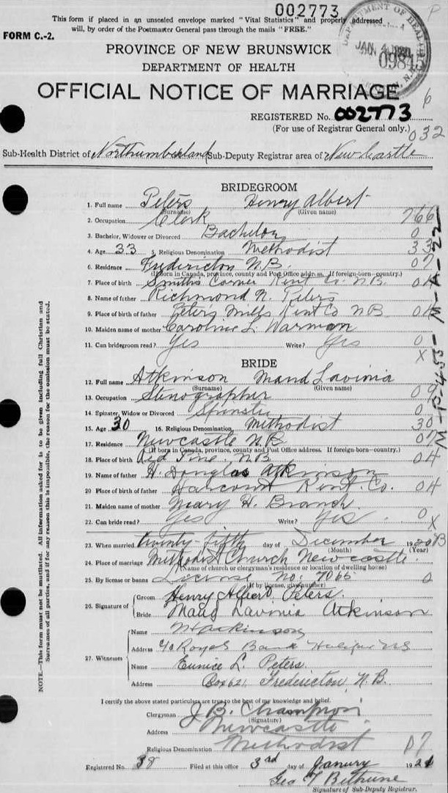
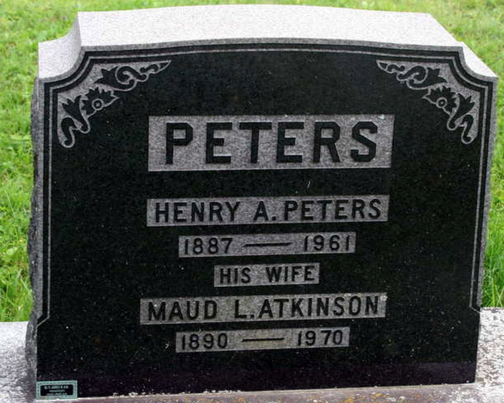
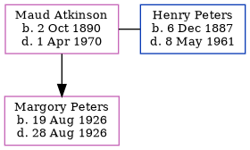

Maud Lavinia Peters (née Atkinson) 1890 - 1970
[ Home ] | [ Calendar ] | [ Surnames Index ] | [ Errors ] | [ Family History ]Maud Atkinson, the wife of Henry Albert Peters (the third cousin twice-removed on the father's side of Nigel Horne), was born in Red Pine, Gloucester, New Brunswick, Canada on 2 Oct 18901,2,3,4 and married Henry (a bookkeeper with whom she had 1 child, Margory Elaine) at Methodist Church, Newcastle, Northumberland, New Brunswick, Canada on 25 Dec 1920. In 1901, she was living in New Brunswick5.
She died on 1 Apr 1970 in Fredericton, York, New Brunswick1,4 and was buried there at Sunny Bank Cemetery, McEvoy St after 1 Apr 19701,4.
Children
- Margory Elaine was born on 19 Aug 1926
Citations
- Canada, Find A Grave Index, 1600s-Current Ancestry.com Operations, Inc.
- New Brunswick Birth And Baptism Index 1769-1899 - Findmypast
- New Brunswick, Select Births and Baptisms, 1819-1899 Ancestry.com Operations, Inc.
- Web: International, Find A Grave Index Ancestry.com Operations, Inc.
- Canada Census 1901 - Findmypast (was the daughter of the head of the household)
Media
Henry Peters - Maud Atkinson - marriage certificat

Henry Peters - Maud Atkinson - marriage certificat
Henry Peters - Maud Atkinson - gravestone

New Brunswick Birth and Baptism Index 1769-1899 - R_684908270
Canada Census 1901 - CAN/CENSUS/1901/00561418
Canada Census 1891 - CAN/CENSUS/1891/00307131
Family Tree
Map
Generated by ged2site. Last updated on Jul 3, 2024
Known Issues
Marriage date (25 Dec 1920) has no citations
No records of living with anyone
Adding date of burial as 'aft 1 Apr 1970'